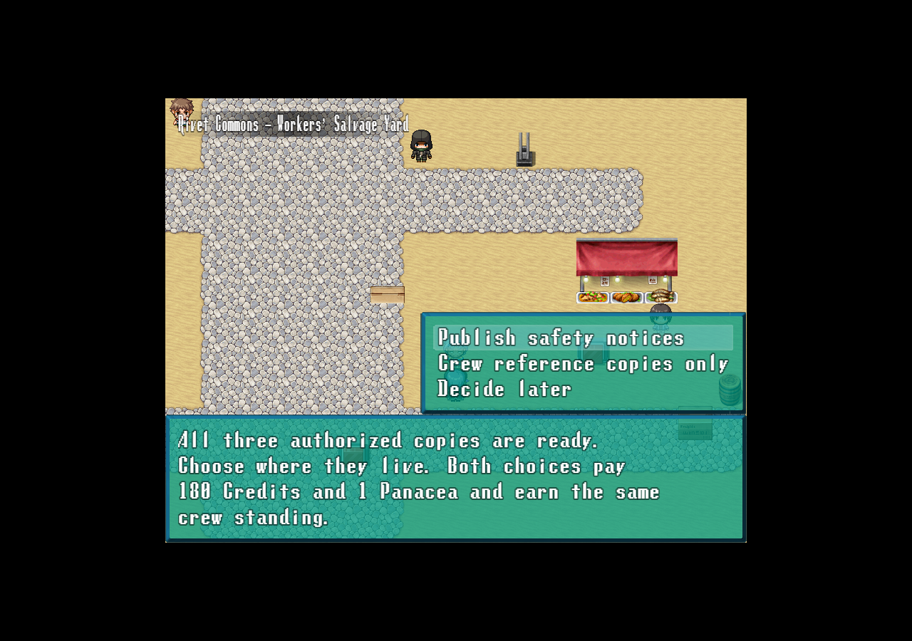
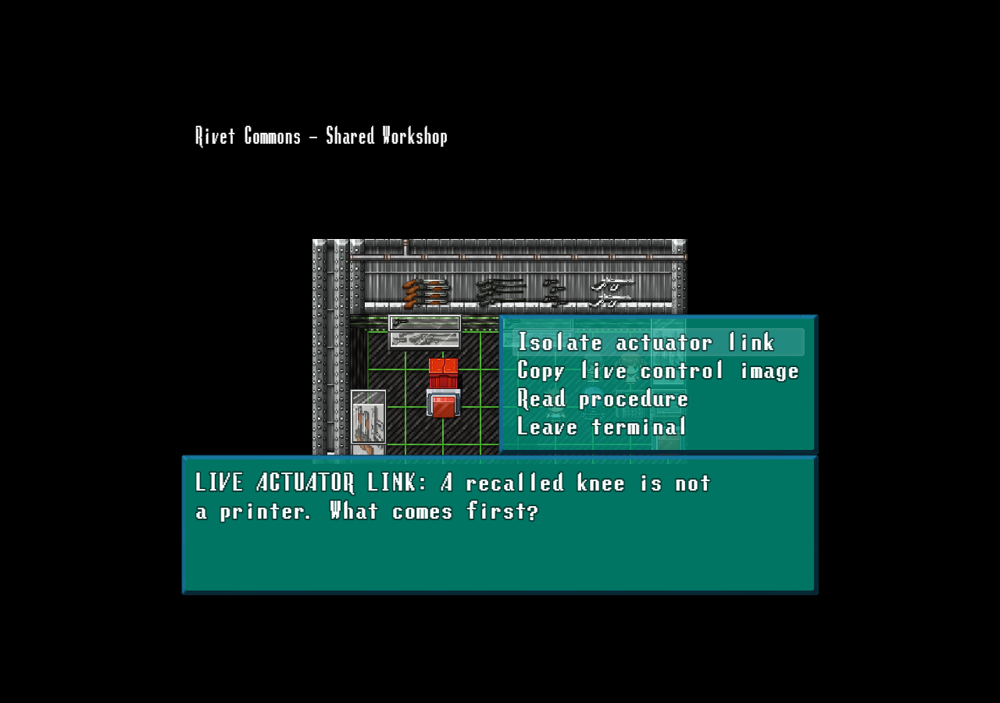
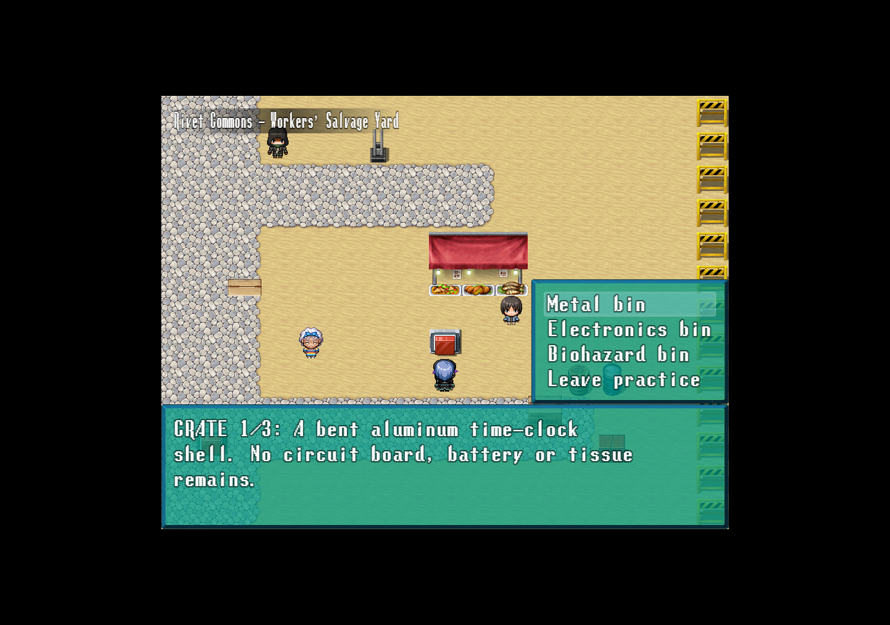
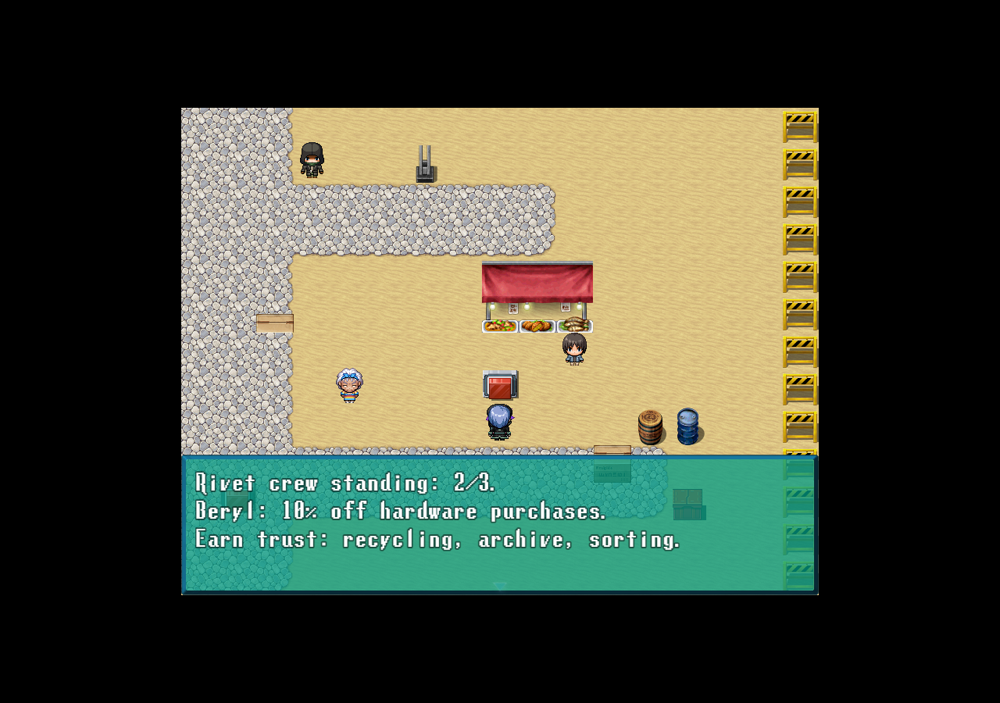
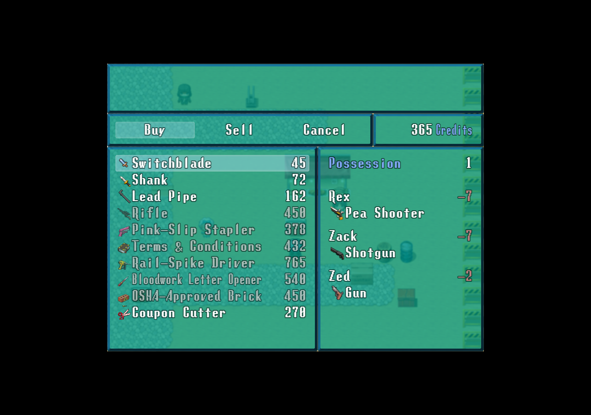
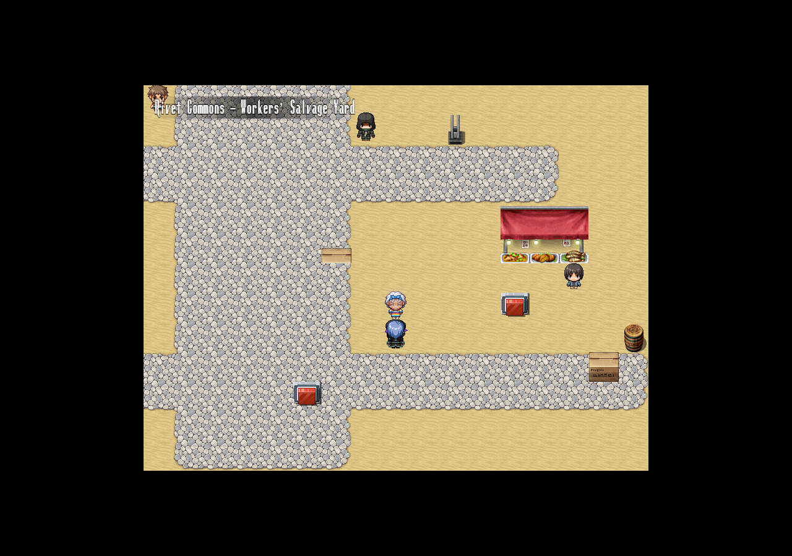

Four additions built around the existing salvage crew, workshop, canteen and Snack Liberation Front. These screenshots show the native game UI; click one to inspect it at full resolution.
Workers Memory archive

Splice asks for three authorized records. Choose public safety notices or crew-only copies. Both pay180 Credits and1 Panacea once.
Workshop hacking puzzle

Isolate, copy read-only, verify. Hints and retries are safe; correct partial progress survives leaving and saving. One80-Credit and Energy Drink stipend.
Three-bin sorting

Three sealed practice crates, clear rules and a free exit. First perfect run earns150 Credits and1 Green Herb. Repeat practice pays no extra reward.
Local standing

Recycling, archive completion and sorting each count once. At2/3, Beryl offers10% off hardware purchases.
Beryl's discount

The Switchblade costs45 Credits instead of50. Other shops and selling prices keep their original values.
Existing world, new hooks

Start with Splice in the southeast salvage yard. The nearby sorting cabinet is on open sand. The original workshop shop and memorial remain accessible through explicit options.